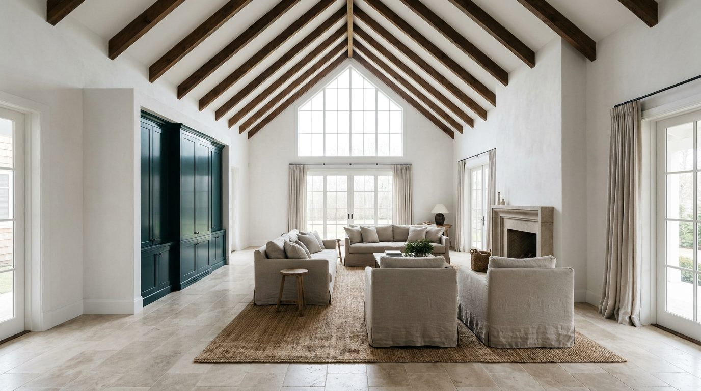

Atlante · INT-US-04 · Stati Uniti · USA
Villa contemporanea a capanna negli Hamptons, con variante ranch moderno in Texas
Esempi · esterno e interno


Perché funziona
Hamptons e Texas chiedono due cose opposte allo stesso guscio: understatement a est, scala e materia a ovest. Con base neutra (calce, travertino, noce) e un solo volume laccato petrolio, lo stesso ambiente gira in quiet o in loud senza rifare l'architettura — utile perché il catalogo deve mostrare il prodotto italiano come scelta, non come decorazione importata.
Architettura · elementi riproducibili
- volume a capanna 12 x 8 m, colmo a 5,0-5,2 m, falde a 40°
- sporto di gronda 1,2-1,8 m su tutti i lati
- rivestimento in scandole di cedro (Hamptons) o metallo a giunzione verticale (Texas)
- camino in cemento a vista, sezione 1,2 x 1,8 m, fino al colmo
- tavolato in noce oliato, doghe 20 cm
- vetrata a capanna con traversa a 2,4 m e clerestory sopra
- corridoio passante centrale nella variante texana, larghezza 3 m
- parete in terra cruda a vista nella variante texana, spessore 45 cm
- veranda schermata su un lato corto, 4 x 5 m
Verificato: lo shingle style è la linea architettonica delle case degli Hamptons; il Parrish Art Museum di Herzog & de Meuron a Water Mill (2012) porta lo stesso profilo a capanna su cemento a vista.
Verificato: O'Neil Ford unisce il modernismo europeo alle qualità dell'architettura texana tradizionale.
Verificato: il dogtrot, con il corridoio passante centrale, è il tipo rurale del Sud degli Stati Uniti usato per il raffrescamento.
Valutazione: la variante texana sostituisce le scandole con il metallo a giunzione verticale e la calce con la terra cruda, mantenendo quote, luce e sporti.
Valutazione: la stessa architettura regge entrambi i registri — base in calce, travertino e noce per il quiet, volume laccato petrolio e ottone brunito per il loud.
Luce
Prompt di generazione (EN)
Editorial interior photograph of an empty contemporary gabled villa great room on Long Island, 3.5 m ceiling rising to a 5.2 m ridge, white lime-plaster walls, board-formed concrete chimney, wide-plank oiled oak floor, cedar shingle exterior and dark metal window frames, clerestory glazing above the ridge, deep roof overhang, one petrol-green lacquered cabinet volume on the far wall, even north light through the glazed gable plus low west sun at 4 pm, soft shadows, neutral grade, camera at 1.35 m, symmetrical two-point perspective, 28 mm lens at f/7.1, 15 percent negative space above the ridge beam, no people, no text, no logos